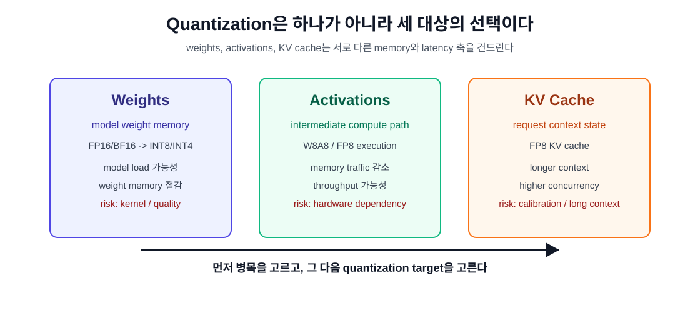
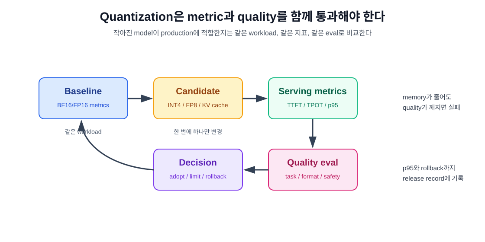

8장. Quantization은 언제 성능 최적화이고 언제 위험인가¶
7장에서 우리는 LLM server의 성능을 TTFT, TPOT, throughput, p95/p99, queue, KV cache usage로 나누어 읽었다. 이제 자연스럽게 다음 질문이 나온다.
4-bit나 FP8로 줄이면 더 빠르고 싸지는가?
답은 "그럴 수 있지만, 자동으로 그렇지는 않다"이다. Quantization은 precision을 낮춰 memory footprint와 memory traffic을 줄이는 기술이다. 하지만 낮은 precision은 accuracy, kernel support, dequantization overhead, calibration, runtime compatibility를 함께 끌고 온다.
이 장의 독자 질문은 다음과 같다.
Quantization은 언제 성능 최적화이고, 언제 production risk가 되는가?
핵심은 하나다. Quantization은 "작게 만드는 버튼"이 아니라 serving system의 병목을 어느 축에서 줄일지 선택하는 운영 결정이다.
먼저 무엇을 quantize하는지 분리한다¶
Quantization을 말할 때 가장 먼저 해야 할 일은 대상 분리다. Weight quantization, activation quantization, KV cache quantization은 서로 다른 문제다.
| 대상 | 줄이는 것 | 주로 영향 받는 지표 | 대표 위험 |
|---|---|---|---|
| weights | model weight memory | model load memory, throughput, TPOT | kernel 미지원, accuracy 저하 |
| activations | layer 중간 계산 값 | compute/memory traffic | calibration 민감도, kernel path |
| KV cache | request별 context state | max concurrency, long context, TTFT/p95 | long-context 품질, scale calibration |
이 세 가지를 섞어 말하면 판단이 틀어진다. 예를 들어 INT4 weight quantization은 model weight memory를 크게 줄일 수 있지만, 긴 context에서 KV cache가 병목이라면 동시성 문제를 충분히 해결하지 못할 수 있다. 반대로 FP8 KV cache는 long-context capacity에는 직접 도움이 되지만, weight memory가 이미 GPU를 거의 채운 상태라면 model 자체를 올리는 문제는 해결하지 못한다.

"작아진다"와 "빨라진다"는 다르다¶
Quantization이 memory를 줄이는 이유는 직관적이다. 같은 숫자 개수를 더 적은 bit로 저장하기 때문이다.
대략적인 weight memory는 다음처럼 볼 수 있다.
따라서 7B model을 단순화해서 보면 다음과 같은 감각을 얻을 수 있다.
| dtype | parameter당 bytes | 7B weight rough memory |
|---|---|---|
| FP32 | 4 | 약 28 GB |
| FP16/BF16 | 2 | 약 14 GB |
| INT8/FP8 | 1 | 약 7 GB |
| INT4 | 0.5 | 약 3.5 GB |
이 표는 optimizer state, metadata, quantization scale, padding, runtime overhead를 뺀 rough estimate다. 실제 serving memory와는 다르다. 하지만 왜 quantization이 작은 GPU에서 큰 model을 올리는 데 도움이 되는지는 보여준다.
문제는 속도다. Memory footprint가 줄었다고 latency가 자동으로 줄지는 않는다.
속도가 좋아지려면 보통 다음 조건이 필요하다.
- quantized format을 직접 처리하는 kernel이 있다.
- dequantization overhead가 memory traffic 감소보다 작다.
- batch size와 sequence length가 해당 kernel이 잘 쓰이는 영역에 있다.
- GPU architecture가 그 precision을 빠르게 처리한다.
- runtime이 해당 model architecture와 quantization format을 안정적으로 지원한다.
이 조건이 깨지면 model은 작아졌지만 느려질 수 있다. 또는 평균 throughput은 좋아졌지만 p95 latency가 악화될 수 있다.
Weight-only quantization: model을 올리기 위한 첫 도구¶
Weight-only quantization은 model weights를 낮은 precision으로 저장하고 실행한다. AWQ, GPTQ, BitsAndBytes 4-bit 같은 이름을 여기서 자주 만난다.
vLLM quantization 문서는 quantization이 model precision을 낮춰 memory footprint를 줄이고 더 다양한 장치에서 큰 model을 실행하게 한다고 설명한다. 또한 vLLM은 AutoAWQ, BitsAndBytes, GPTQModel, LLM Compressor, NVIDIA Model Optimizer, Quantized KV Cache 등 여러 quantization 경로를 지원한다.
Weight-only quantization이 유용한 경우는 명확하다.
- BF16/FP16 weight가 GPU에 올라가지 않는다.
- 더 작은 GPU에서 model serving baseline을 만들고 싶다.
- weight memory를 줄여 KV cache 여유를 조금이라도 확보하고 싶다.
- throughput보다 memory fit이 첫 번째 문제다.
하지만 위험도 있다.
- 특정 GPU에서는 해당 quantization kernel이 빠르지 않을 수 있다.
- 일부 model architecture나 layer가 지원되지 않을 수 있다.
- calibration 또는 quantization 방식에 따라 답변 품질이 떨어질 수 있다.
- 같은 "4-bit"라도 AWQ, GPTQ, NF4, GGUF quant type은 같은 것이 아니다.
Hugging Face Transformers 문서도 quantization method마다 장단점이 있고, calibration이 필요한 방법과 on-the-fly 방식이 다르다고 설명한다. 따라서 "4-bit model"이라는 이름만으로 production 적합성을 판단하면 안 된다.
Activation quantization: kernel과 hardware 의존성이 더 크다¶
Activation quantization은 layer 중간 계산 값을 낮은 precision으로 처리한다. FP8 W8A8처럼 weight와 activation을 함께 낮추는 방식이 여기에 가까운 운영 이슈를 만든다.
Activation quantization은 memory traffic과 compute path를 줄일 수 있지만, hardware와 kernel support에 더 민감하다. vLLM의 supported hardware 표만 봐도 quantization implementation마다 Volta, Turing, Ampere, Ada, Hopper, AMD GPU, Intel GPU, CPU 지원 여부가 다르다. 예를 들어 FP8 계열은 GPU 세대와 backend에 강하게 묶인다.
따라서 activation quantization은 다음 질문을 통과해야 한다.
- 내 GPU architecture가 이 precision을 빠르게 처리하는가?
- runtime이 이 model architecture에서 해당 kernel을 쓰는가?
- batch/concurrency가 kernel 효율이 나오는 영역인가?
- accuracy regression을 볼 eval set이 있는가?
- fallback path로 조용히 느린 kernel을 타지 않는가?
Activation quantization은 잘 맞으면 강력하지만, "옵션을 켰다"와 "빠른 kernel을 탔다"는 다른 말이다.
KV cache quantization: long context와 concurrency를 위한 도구¶
5장에서 본 것처럼 KV cache는 active tokens에 따라 커진다. 6장에서 첫 server를 띄웠고, 7장에서 TTFT와 p95를 봤다면, 이제 KV cache quantization이 왜 중요한지 명확해진다.
vLLM의 Quantized KV Cache 문서는 FP8 KV cache가 KV cache memory footprint를 줄여 더 많은 token을 memory에 저장하고, throughput과 longer context window 지원에 도움이 될 수 있다고 설명한다. 또한 vLLM은 FP8 KV cache에 대해 per-tensor와 per-attention-head quantization 전략을 설명하고, scale calibration 방식을 세 가지로 나눈다.
KV cache quantization은 이런 상황에서 후보가 된다.
- 긴 prompt나 긴 context workload에서 KV cache usage가 높다.
- concurrency를 올리면 p95 latency가 급격히 나빠진다.
- model weight는 올라가지만 active sequence 수가 부족하다.
- long RAG, agent, code assistant처럼 context가 길고 반복된다.
하지만 위험도 분명하다.
- KV cache는 decode 중 attention 결과에 계속 영향을 준다.
- scale calibration이 부정확하면 long-context 품질이 흔들릴 수 있다.
- 일부 backend에서는 quantized cache를 쓰더라도 attention compute path가 제한될 수 있다.
- FP8 cache가 memory는 줄여도 TPOT 또는 p95가 기대만큼 좋아지지 않을 수 있다.
vLLM 문서는 FP8 KV cache scale을 기본값, random token calibration, dataset calibration 방식으로 계산할 수 있다고 설명하고, dataset 기반 calibration을 품질 관점에서 권장한다. 운영 관점에서는 이 말이 중요하다. KV cache quantization은 단순 runtime flag가 아니라 calibration artifact까지 포함한 release decision이다.
Quantization format은 release artifact다¶
Quantized model은 원본 model과 같은 artifact가 아니다. 최소한 다음 정보가 release record에 들어가야 한다.
| 항목 | 기록해야 하는 이유 |
|---|---|
| base model id와 revision | 원본 weight 추적 |
| quantization method | AWQ, GPTQ, BitsAndBytes, FP8, GGUF 등 |
| bit width와 dtype | INT4, INT8, FP8, BF16 등 |
| group size / scale strategy | accuracy와 kernel compatibility 영향 |
| calibration dataset | quantization 품질 재현 |
| runtime version | kernel과 loader behavior 추적 |
| GPU architecture | hardware support 차이 |
| eval result | 품질 회귀 확인 |
| serving benchmark | latency/throughput/p95 확인 |
이 기록이 없으면 나중에 "4-bit로 바꿨더니 좋아졌다" 또는 "FP8로 바꿨더니 품질이 떨어졌다"를 재현할 수 없다. Quantization은 model registry의 부가 정보가 아니라 release artifact의 핵심 필드다.
측정 순서: baseline을 먼저 만든다¶
Quantization 실험은 항상 BF16/FP16 baseline에서 시작한다. 이미 6장과 7장에서 만든 측정 흐름을 그대로 쓴다.
- Baseline server를 띄운다.
-
model id, runtime version, GPU, dtype, max model length, command를 기록한다.
-
Workload를 고정한다.
-
short chat, long prompt, high concurrency를 분리한다.
-
Baseline metrics를 저장한다.
-
TTFT p50/p95, TPOT p50/p95, e2e p95, output tok/s, queue time, KV cache usage, GPU memory를 기록한다.
-
Quantized variant를 하나만 바꾼다.
-
weight quantization 또는 KV cache quantization 중 하나만 먼저 바꾼다.
-
같은 workload를 다시 돌린다.
-
request payload와 benchmark 조건을 바꾸지 않는다.
-
Quality eval을 같이 본다.
-
latency가 좋아져도 hallucination, instruction following, tool call format, retrieval grounding이 깨지면 실패다.
-
운영 결정을 적는다.
- 채택, 보류, 특정 workload에만 사용, rollback 중 하나로 결론을 낸다.

어떤 지표가 좋아져야 성공인가¶
Quantization 성공 기준은 병목에 따라 다르다.
| 병목 | 기대하는 개선 | 같이 봐야 할 위험 |
|---|---|---|
| model이 GPU에 안 올라감 | load 성공, GPU memory 감소 | accuracy, unsupported layer |
| weight memory가 큼 | memory 여유, throughput 개선 | TPOT 악화, fallback kernel |
| decode memory bandwidth | TPOT 개선, output tok/s 증가 | p95 tail, batch 조건 |
| KV cache pressure | higher concurrency, longer context | long-context 품질 |
| cost 압박 | cost per token 감소 | SLA 위반, eval regression |
성공 기준을 미리 정하지 않으면 숫자 해석이 흔들린다. 예를 들어 INT4 weight model이 BF16보다 throughput이 낮더라도, BF16 model이 아예 GPU에 올라가지 않는 환경이라면 INT4는 성공일 수 있다. 반대로 큰 GPU에서 BF16 baseline이 이미 빠르다면 INT4의 memory 절감보다 latency 악화가 더 큰 문제가 될 수 있다.
실패 패턴¶
Quantization 실험은 다음 패턴으로 실패한다.
Model은 작아졌지만 TPOT가 나빠진다¶
Dequantization overhead가 크거나, fast kernel을 타지 못했을 가능성이 있다. GPU architecture와 runtime log를 확인한다.
평균 throughput은 좋아졌지만 p95가 나빠진다¶
Batching과 scheduler pressure가 바뀌었을 수 있다. 7장에서 본 것처럼 average와 tail을 분리해야 한다.
Short chat은 괜찮지만 long prompt가 나빠진다¶
KV cache, long-context attention, calibration 문제가 섞일 수 있다. long prompt workload를 별도로 본다.
일반 QA는 괜찮지만 tool call format이 깨진다¶
Accuracy eval 하나로는 부족하다. Production task별 eval이 필요하다. JSON format, function calling, citation, refusal behavior를 따로 확인한다.
특정 GPU에서는 빠르고 다른 GPU에서는 느리다¶
Quantization kernel은 hardware 의존적이다. vLLM supported hardware 표처럼 implementation마다 지원 matrix가 다르다. Release note에는 GPU 세대까지 기록해야 한다.
실습: 7장의 표에 quantization column을 추가한다¶
7장의 결과표를 다음처럼 확장한다.
| run | quantization | input len | output len | concurrency | TTFT p95 | TPOT p95 | e2e p95 | output tok/s | quality |
|---|---|---|---|---|---|---|---|---|---|
| A | BF16 baseline | 512 | 128 | 1 | 기준 | 기준 | 기준 | 기준 | 기준 |
| B | INT4 weight | 512 | 128 | 1 | 비교 | 비교 | 비교 | 비교 | eval 필요 |
| C | BF16 baseline | 4096 | 128 | 8 | 기준 | 기준 | 기준 | 기준 | 기준 |
| D | INT4 weight | 4096 | 128 | 8 | 비교 | 비교 | 비교 | 비교 | eval 필요 |
| E | FP8 KV cache | 4096 | 128 | 8 | 비교 | 비교 | 비교 | 비교 | long-context eval |
결론은 "B가 A보다 빠르다"가 아니다. 결론은 이런 형태여야 한다.
- INT4 weight는 A10에서 model load를 가능하게 했지만 TPOT p95가 BF16 대비 18% 나빠졌다.
- FP8 KV cache는 long prompt concurrency 8에서 OOM을 없앴지만 long-context retrieval eval을 추가로 봐야 한다.
- BF16 baseline은 A100에서 latency가 가장 안정적이므로 production interactive traffic에는 유지한다.
- Quantized variant는 offline summarization 또는 low-priority tenant에 먼저 적용한다.
이 정도로 써야 운영 결정이 된다.
언제 quantization을 선택하지 말아야 하는가¶
Quantization을 미루는 것이 맞는 경우도 있다.
- 현재 병목이 network, application queue, retrieval, tool latency다.
- p95 악화 원인이 model compute가 아니라 queue policy다.
- eval set이 없어 품질 회귀를 볼 수 없다.
- target GPU에서 fast kernel support가 불명확하다.
- rollout과 rollback 경로가 없다.
- 규제나 보안 때문에 model artifact 변경 검증이 필요하다.
이런 상황에서 quantization을 먼저 하면 문제 원인을 흐린다. 7장의 metric reading을 먼저 하고, 병목이 model memory 또는 decode path에 있다는 근거가 있을 때 quantization을 실험한다.
이 장의 결론¶
Quantization은 AI infrastructure engineer에게 중요한 도구지만, 항상 정답은 아니다.
- Weight, activation, KV cache quantization은 서로 다른 병목을 줄인다.
- Memory footprint 감소와 latency 개선은 같은 말이 아니다.
- Fast kernel, GPU architecture, runtime support가 맞아야 실제 성능 개선이 나온다.
- KV cache quantization은 long context와 concurrency에는 중요하지만 calibration과 quality risk가 있다.
- Quantized model은 base model과 다른 release artifact로 기록해야 한다.
- 6-7장에서 만든 baseline과 metric table 없이 quantization 효과를 판단하면 안 된다.
다음 장에서는 vLLM 자체를 더 깊게 본다. PagedAttention, scheduler, continuous batching, prefix caching, metrics를 하나의 general-purpose LLM serving baseline으로 묶어 이해한다.